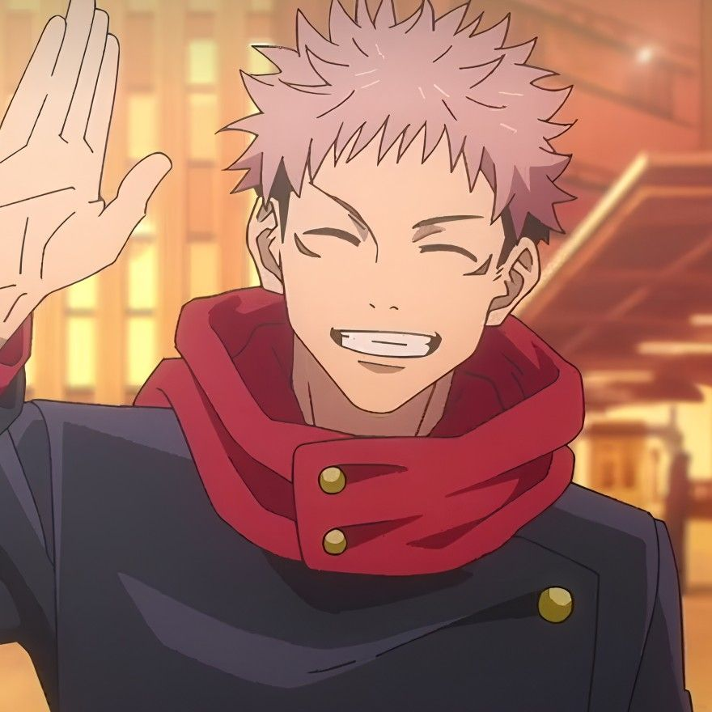
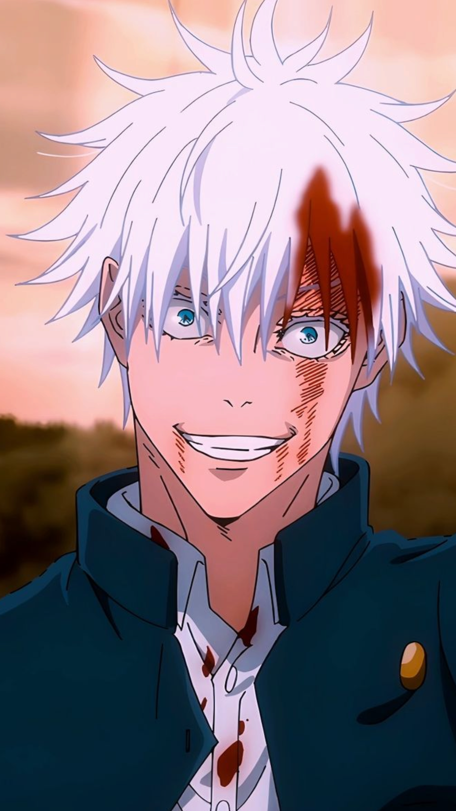
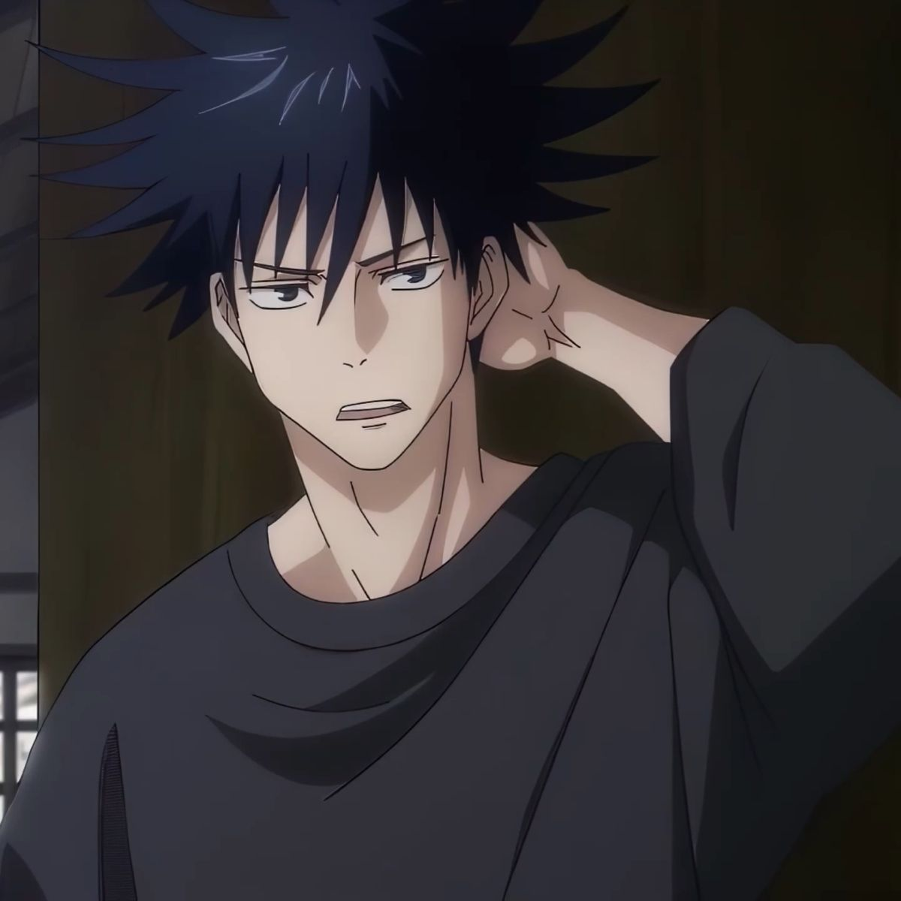
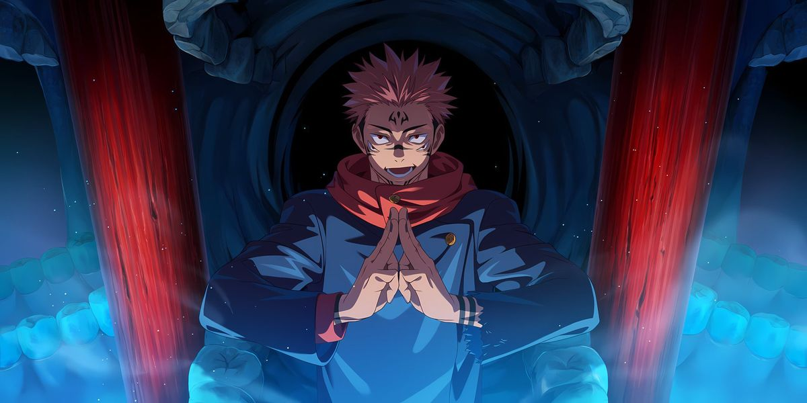
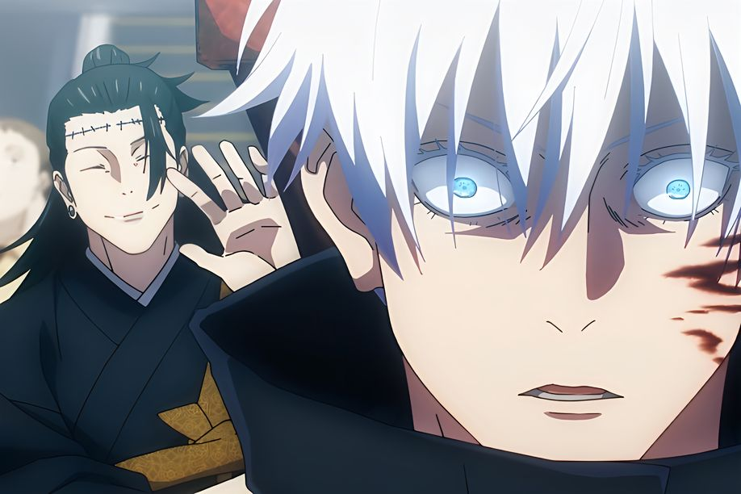
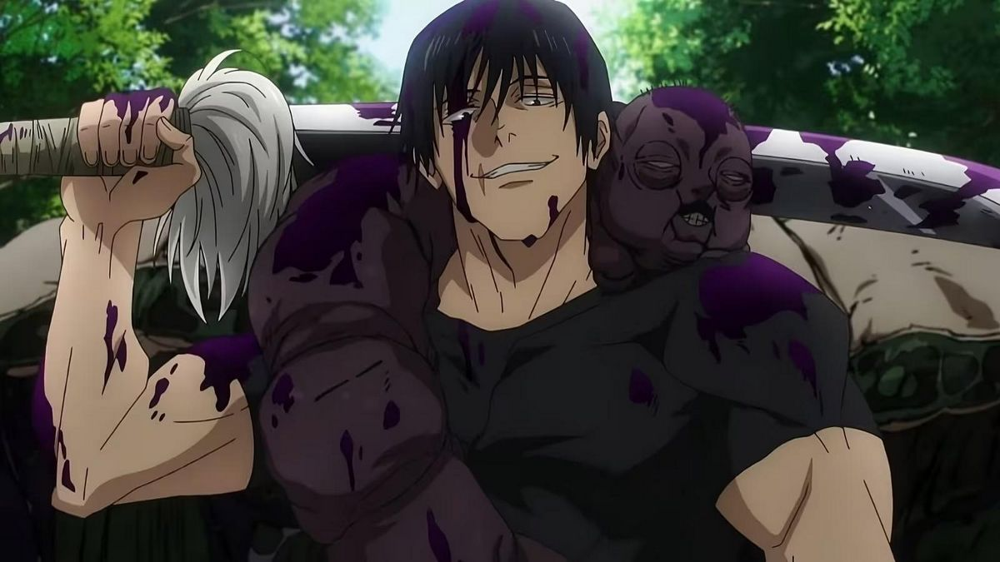
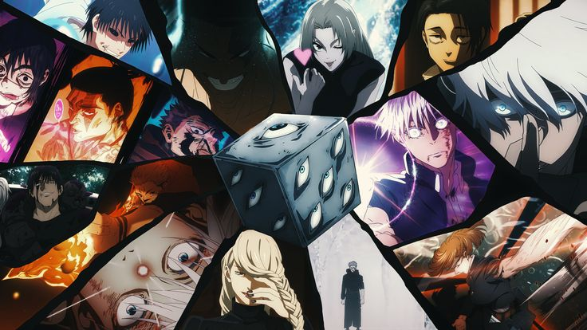

Юджи Итадори
Главный герой
Короткая характеристика: сильный, добрый и невероятно физически развитый школьник. Становится сосудом Сукуны, но продолжает бороться за жизнь других.
Жанр: Экшен, тёмное фэнтези, сверхъестественное
Год: 2020-...
Кол-во эпизодов: 2 сезона (24-23 серий)
Итадори Юдзи — главный герой аниме и манги «Jujutsu Kaisen». Добрый, решительный и физически невероятно сильный старшеклассник, который становится шаманом после того, как проглатывает палец Рёмен Сукуны — древнего проклятого духа. Обладая природной силой и сильным чувством справедливости, Юдзи сражается с проклятиями, стремясь защитить людей и исполнить последнее желание своего деда — помогать другим, пока жив.
«Магическая битва» — популярный аниме-сериал по одноимённой манге, рассказывающий о мире, где человечество страдает от опасных проклятий — проявлений негативных эмоций. Шаманы-магики используют особые техники, чтобы сдерживать и уничтожать эти сущности. История следует за Итодори Юдзи, который случайно становится носителем древнего злого духа и вступает в академию магических искусств. Сериал сочетает динамичные бои, глубокую драму и яркую вселенную, что сделало его одним из самых заметных аниме последних лет.
Рейтинг
Эпизода
Год релиза

Главный герой
Короткая характеристика: сильный, добрый и невероятно физически развитый школьник. Становится сосудом Сукуны, но продолжает бороться за жизнь других.

Один из сильнейших магов-джудзюцу
Короткая характеристика: Обладатель техники "Безграничность" и домена "Бесконечное Пустое". Учитель Итадори и других студентов, известен своей беззаботной и уверенной в себе личностью.

Маг-джудзюцу
Использует теневых шикигами. Сдержанный, умный и тактически сильный персонаж, который ценит жизнь и справедливость.
Кликни на картинку, чтобы увеличить.




«Сильный сюжет, крутая анимация — рекомендую.»
— Аноним
«Персонажи запоминающиеся, OST — огонь.»
— Fan